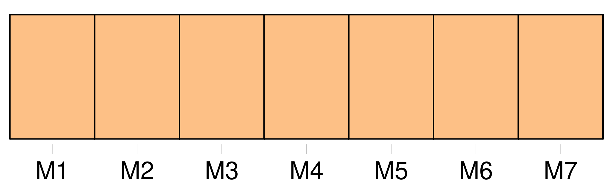
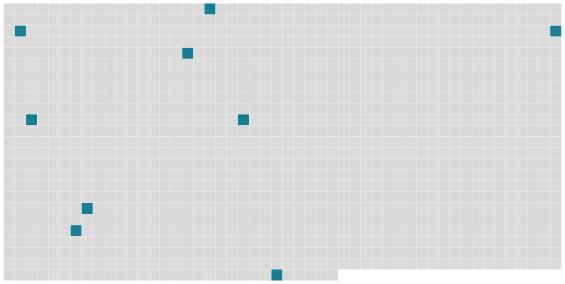

Longueur nb maillons : 9 mentions |
 |
Depuis un mois entier je chassais avec emportement, avec une joie sauvage, avec cette ardeur qu' [on] a pour les passions nouvelles. [2 phrases]
Un antique mobilier habitait seul les pièces toujours fermées, où jadis ces gens dont [on] voyait les portraits accrochés dans un corridor aussi tempétueux que les avenues recevaient cérémonieusement les nobles voisins. Quant à nous, nous nous étions réfugiés simplement dans la cuisine, seul coin habitable du manoir, une immense cuisine dont les lointains sombres s'éclairaient quand [on] jetait une bourrée nouvelle dans la vaste cheminée. [1 phrases] C'était l'unique pièce qu' [on] eût fait plafonner et plâtrer partout, à cause des souris. [10 phrases] C'est donc pour cela qu' [on] a sonné toute la journée!!
» [20 phrases] Le ciel profond, net et dur, était criblé d'étoiles qu' [on] eût dites pâlies par la gelée ; elles scintillaient non point comme des feux, mais comme des astres de glace, des cristallisations brillantes. [2 phrases]
Des coqs, trompés par ces bruits, chantaient ; et en passant le long des étables, [on] entendait remuer les bêtes troublées par ces rumeurs de vie. [9 phrases] Par la porte ouverte de l'église, [on] apercevait le choeur illuminé. |
 |
Il est possible de télécharger la ressource sur la page Ortolang |
Si vous avez des questions ou vous voyez des erreurs, merci d'envoyer un mail à silvia.federzoni89@gmail.com |